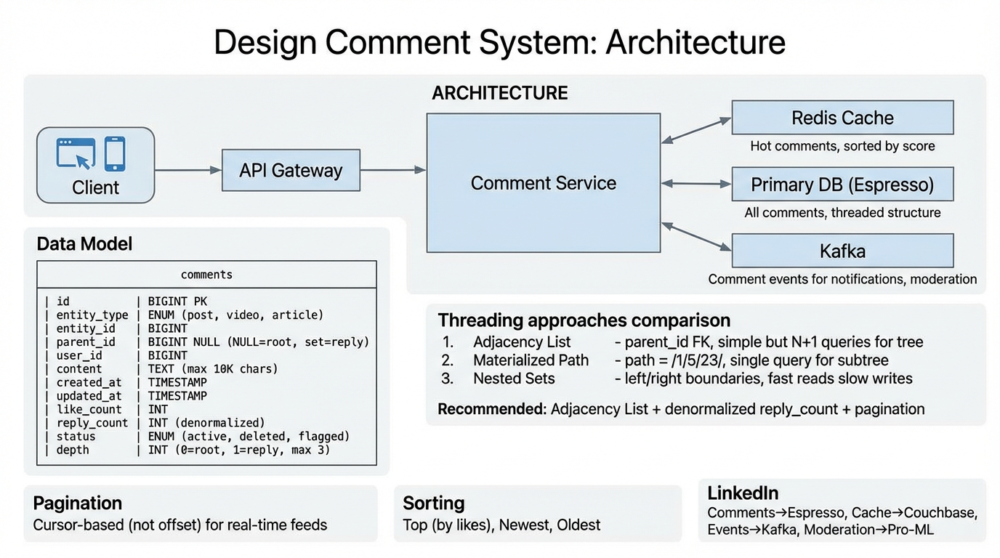

A deep dive into building a scalable, threaded comment system — threading models, real-time delivery, spam moderation, cursor pagination, and data modeling at scale.
A comment system powers user interactions across posts, videos, articles, news feeds, and product listings. Users can post top-level comments, reply in threads, like/dislike, and see real-time updates. The system must handle massive read-heavy traffic with low-latency rendering of threaded comment trees.
The system is built around a Comment Service that coordinates reads and writes, backed by a partitioned database for persistence, a distributed cache for hot threads, and an event bus for asynchronous fanout.
Stateless REST/gRPC service that handles CRUD operations, builds comment trees, and enforces business rules (max depth, rate limiting, content validation).
Caches serialized comment trees per entity. Invalidated on writes. Sorted sets for paginated top-level comment lists. TTL-based eviction for cold threads.
Partitioned by entity_id so all comments for one entity live on the same shard. Supports secondary indexes on parent_id and user_id.
Publishes comment.created, comment.liked, comment.flagged events. Consumers update counters, trigger moderation, push real-time notifications.
| Column | Type | Description |
|---|---|---|
id | BIGINT (PK) | Snowflake-style globally unique comment ID |
entity_type | ENUM | POST, VIDEO, ARTICLE, PRODUCT |
entity_id | BIGINT | ID of the parent entity (partition key) |
parent_id | BIGINT (nullable) | NULL for top-level, points to parent comment for replies |
user_id | BIGINT | Author of the comment |
content | TEXT | Comment body (max 2000 chars) |
like_count | INT | Denormalized like counter |
reply_count | INT | Denormalized direct reply counter |
depth | TINYINT | Nesting level (0 = top-level, max 3) |
status | ENUM | ACTIVE, DELETED, FLAGGED, SPAM |
created_at | TIMESTAMP | Creation time (used for sort + cursor) |
entity_id. All comments for a single post/video co-locate on the same shard, making tree reconstruction a single-shard query. The entity_type + entity_id composite is the logical partition key.

POST /comments with entity_id, content, and optional parent_id.depth from parent.reply_count on parent is incremented atomically.comment.created event is published with full comment payload.GET /comments?entity_id=X&sort=top&cursor=abcparent_id IS NULL) sorted by the requested order, with cursor-based pagination.depth ≤ 3). Tree is assembled in-memory.The core challenge of a comment system is representing and querying tree-structured data efficiently. There are three classical approaches, each with distinct trade-offs.
Each comment stores a parent_id pointing to its parent. Top-level comments have parent_id = NULL. The tree is reconstructed by the application via recursive queries or in-memory assembly.
-- Fetch top-level comments
SELECT * FROM comments
WHERE entity_id = ? AND parent_id IS NULL
ORDER BY created_at DESC LIMIT 20;
-- Fetch replies for a comment
SELECT * FROM comments
WHERE parent_id = ? ORDER BY created_at ASC;
Each comment stores its full ancestry as a path string, e.g., /root_id/parent_id/self_id. Subtree queries become prefix matches.
-- Schema addition
path VARCHAR(500) -- e.g., "/100/205/310"
-- Fetch all descendants of comment 205
SELECT * FROM comments
WHERE entity_id = ? AND path LIKE '/100/205/%'
ORDER BY path, created_at;
Each node stores lft and rgt values. A node's descendants have lft between the parent's lft and rgt. Reads are fast but writes require renumbering.
-- Schema additions
lft INT, rgt INT
-- Fetch all descendants of a comment
SELECT * FROM comments
WHERE entity_id = ? AND lft > parent.lft AND rgt < parent.rgt
ORDER BY lft;
| Criteria | Adjacency List | Materialized Path | Nested Sets |
|---|---|---|---|
| Write complexity | O(1) — single insert | O(1) — concat path | O(n) — renumber siblings |
| Read subtree | Recursive / multi-query | Single LIKE prefix query | Single range query |
| Move subtree | Update one parent_id | Update all descendant paths | Full renumbering |
| Depth limit | Unlimited (but cap in practice) | Limited by path column size | Unlimited |
| Index friendliness | Standard B-tree index | LIKE prefix — partial index use | Range scan on (lft, rgt) |
| Concurrency | No contention | No contention | Lock contention on renumber |
For a high-write, real-time comment system, Adjacency List is the best choice:
reply_count and like_count avoid expensive aggregation queries on reads.Materialized Path is a strong alternative if you need subtree queries without depth limits, but the path column becomes a liability at scale (wide rows, partial index usage).
| Mode | ORDER BY | Use Case |
|---|---|---|
| Top | like_count DESC, created_at DESC |
Default — surfaces the most-liked comments first |
| Newest | created_at DESC |
Real-time discussions, live events |
| Oldest | created_at ASC |
Reading threads chronologically |
Offset-based pagination (LIMIT 20 OFFSET 100) breaks in real-time comment feeds:
OFFSET 20 skips 5 comments the user hasn't seen and shows 5 duplicates.OFFSET rows. At OFFSET 10000 this is a full scan.The cursor encodes the last seen sort key, making each page request a simple range query with no skipping:
-- Newest sort: cursor = last_seen_created_at SELECT * FROM comments WHERE entity_id = ? AND parent_id IS NULL AND created_at < :cursor_created_at ORDER BY created_at DESC LIMIT 20; -- Top sort: cursor = (last_like_count, last_created_at) SELECT * FROM comments WHERE entity_id = ? AND parent_id IS NULL AND (like_count, created_at) < (:cursor_likes, :cursor_ts) ORDER BY like_count DESC, created_at DESC LIMIT 20;
The API returns a next_cursor token (base64-encoded sort values) that the client passes on the next request.
At 10M comments/day, manual moderation is impossible. The system uses a multi-stage pipeline combining ML scoring, community flagging, and human review for edge cases.
comment.created event published to the moderation topic.SPAM automatically. If between 0.5–0.9, status set to FLAGGED for human review.FLAGGED and added to the admin review queue.
{
"event_type": "comment.created",
"comment_id": 8830012345,
"entity_type": "POST",
"entity_id": 771002,
"user_id": 44210,
"content": "Check out this amazing deal...",
"depth": 0,
"timestamp": "2026-04-07T14:30:00Z",
"metadata": {
"user_account_age_days": 2,
"user_prior_spam_count": 0,
"ip_country": "US"
}
}
| Event | Producer | Consumers |
|---|---|---|
comment.created |
Comment Service | ML Classifier, Notification Service, Counter Service |
comment.flagged |
ML Classifier / Flag API | Admin Queue, Analytics |
comment.moderated |
Admin Review | Comment Service (status update), ML Training Pipeline |
comment.liked |
Like Service | Counter Service, Notification Service |
| Component | Generic | LinkedIn Equivalent |
|---|---|---|
| Primary Database | MySQL / PostgreSQL (sharded) | Espresso — LinkedIn's horizontally partitioned document store, partitioned by entity_id |
| Cache Layer | Redis / Memcached | Couchbase — distributed cache for hot comment trees with TTL-based eviction |
| Event Bus | Kafka | Kafka — LinkedIn-created, used for all async event delivery (comment.created, moderation events) |
| ML Moderation | Custom ML pipeline | Pro-ML — LinkedIn's ML platform for training and serving spam/toxicity models |
| Stream Processing | Flink / Spark Streaming | Samza — near-real-time stream processing for moderation scoring, counter updates, and notification fanout |
| API Gateway | Kong / Envoy | Rest.li — LinkedIn's REST framework with built-in rate limiting and auth |
| Notification Service | Push / WebSocket | Real-time Infra — LinkedIn's notification delivery platform for real-time comment updates |
Espresso supports document-level partitioning by entity_id, keeping all comments for a post co-located. It provides:
parent_id and user_id queriesUPDATE comments SET like_count = like_count + 1 WHERE id = ?), idempotent like tracking in a separate comment_likes table with (user_id, comment_id) unique key.DELETED, show as "[deleted]" in UI while preserving reply tree structure. Hard delete only when all descendants are also deleted.comment_edits table. Show "edited" badge in UI. Moderation re-scores on edit.pinned boolean and pinned_at timestamp. Pinned comments are fetched separately and prepended to results before pagination begins.